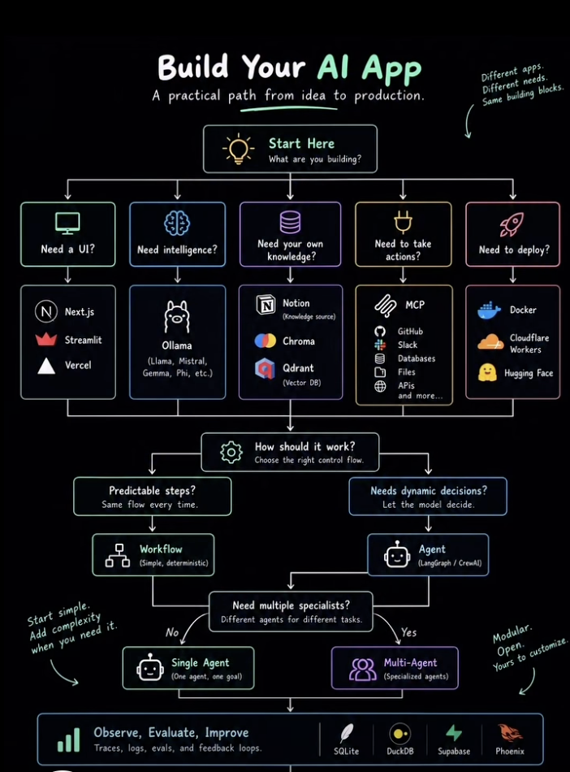
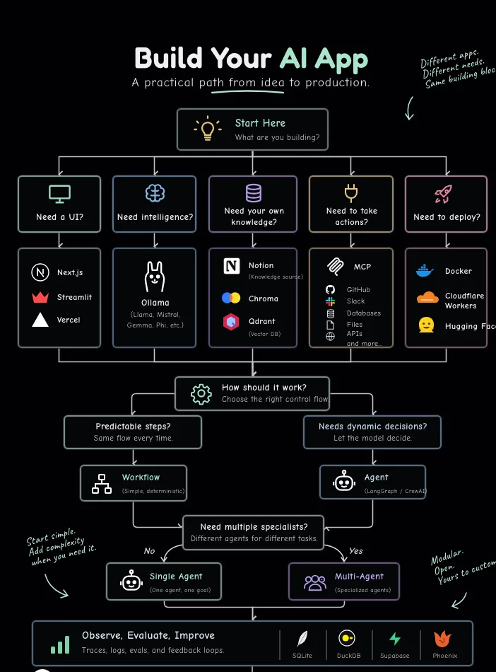
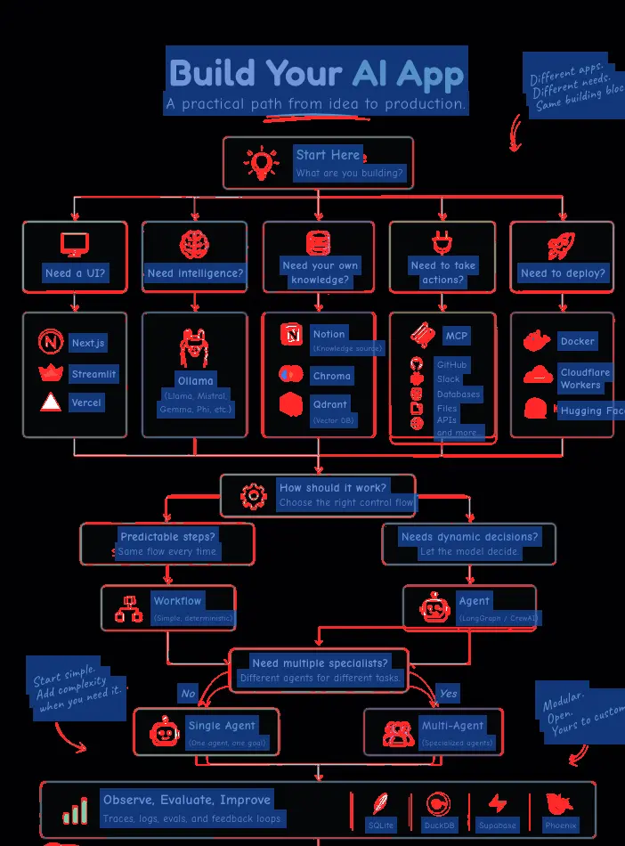

Topo. Sơ đồ «Build Your AI App» dựng bằng HTML DỰNG TỪ MỘT ẢNH
Chỉ có một ảnh chụp sơ đồ (702×950). Mọi nút, cạnh và logo vẽ lại bằng HTML/CSS/SVG tự viết, toạ độ đo từ ảnh. Rê chuột lên một nút để sáng nhánh nối với nó và đọc chú thích. Kéo để di chuyển, cuộn hoặc chụm hai ngón để zoom, bấm đúp để về vừa khung.Độ khớp pixel
Khớp = % pixel mà cả ba kênh màu lệch không quá 32/255. Che chữ = bỏ khung chữ (nới 4 px) khỏi phép so: chữ gốc là font viết tay khác, đặt lệch vài px, so từng nét không có nghĩa. Chụp bằng Playwright đúng khung 702×950.
| Phép so | Khớp | Giống |
|---|
Ảnh gốc

Bản dựng (chụp HTML)

Lệch > 32/255 (đỏ) · chữ đã che (xanh)

Ghi chú trung thực
- Chữ chép từ ảnh. Font Fredoka, Comic Neue, Caveat là đoán theo hình chữ; font gốc có vẻ là một font comic đơn cách, không xác nhận được.
- Logo Next.js, Streamlit, Vercel, Ollama, Notion, Chroma, Qdrant, MCP, GitHub, Slack, Docker, Cloudflare, Hugging Face, SQLite, DuckDB, Supabase, Phoenix vẽ lại bằng SVG đơn giản, chỉ giống đại thể. Các tên là thương hiệu của chủ sở hữu.
- Chú thích khi rê chuột là phần thêm, ảnh gốc không có.
- Ảnh gốc là bản chụp của bên thứ ba, đưa vào đây chỉ để đối chiếu nghiệm thu.
- Tái lập số:
NODE_PATH=$(npm root -g) node tools/topo-diff.cjs(cần một server tĩnh cổng 8842 ở gốc repo).